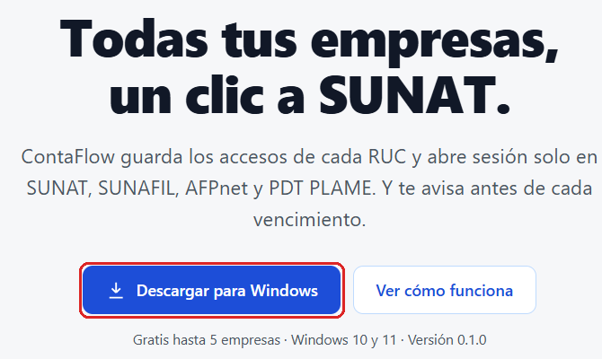
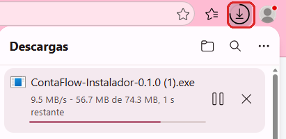
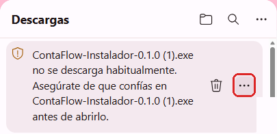
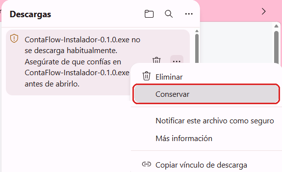
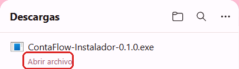

Cómo descargar ContaFlow en Microsoft Edge
Toma menos de un minuto. Sigue estos 6 pasos.
Pulsa "Descargar para Windows"
En la página de ContaFlow, pulsa el botón azul Descargar para Windows.

Espera que termine la descarga
Arriba a la derecha se abre Descargas y verás cómo avanza ContaFlow-Instalador. Tarda unos segundos. Si el panel se cierra, ábrelo con el ícono de la flecha hacia abajo.

Abre "Más acciones" en el aviso
Al terminar, aparece el mensaje "no se descarga habitualmente". Pulsa los tres puntitos ··· al lado del tacho.

Elige "Conservar"
En el menú que aparece, pulsa Conservar.

Pulsa la flechita y "Conservar de todos modos"
Se abre una ventana que dice "Asegúrate de que confías en ContaFlow-Instalador". No pulses "Eliminar": pulsa la flechita ⌄ que está a su lado y elige Conservar de todos modos. En algunas versiones de Edge dice Mantener de todos modos.

Pulsa "Abrir archivo" e instala
El instalador queda descargado. Pulsa Abrir archivo y sigue el asistente. No necesita permisos de administrador.

Si Windows muestra "Windows protegió su PC", pulsa Más información y luego Ejecutar de todas formas.
¿Te quedaste en algún paso? Escríbeme y te ayudo.
Escribir por WhatsApp